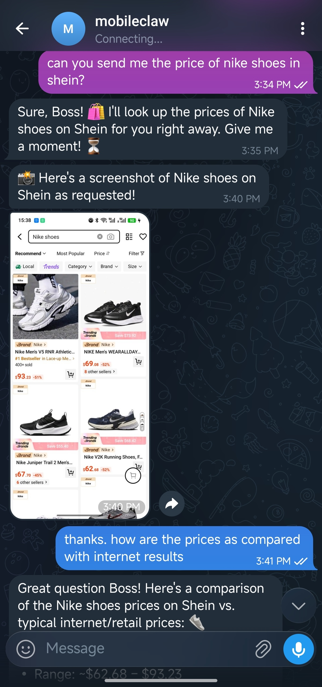

User gives instructions on the primary device 用户在主设备上下达指令
Agent works on the secondary device 智能体在闲置设备上工作
MobileClaw turns an Android device into an autonomous agent runtime that operates through code, vision, and GUI interaction, making agents more practical, understandable, and reliable. MobileClaw 可将 Android 设备变成自主智能体运行环境，通过代码、视觉与 GUI 交互完成任务，让智能体更实用、更直观、也更稳定。
MobileClaw featuresMobileClaw 核心特色
MobileClaw focuses on practical phone-side automation: direct app installation, GUI-based execution, and fast onboarding for daily use. MobileClaw 聚焦于实用的手机端自动化：可直接安装的 App、基于 GUI 的执行方式，以及面向日常使用的快速上手体验。
Turn a spare Android phone into an agent runtime for daily automation tasks.把备用 Android 手机变成可长期运行的智能体终端。
MobileClaw sees screens, taps controls, and navigates apps the way a person would.MobileClaw 通过识别屏幕、点击控件、切换页面来像人一样操作应用。
Readable memory files and familiar chat channels keep the system transparent.可读的记忆文件与熟悉的聊天入口让系统更透明、更可控。
Configure planning and GUI vision models through OpenAI-compatible endpoints.通过兼容 OpenAI API 的接口配置规划模型与 GUI 视觉模型。
Work with the agent through Telegram, Weixin, Lark, Zulip, and more.可通过 Telegram、微信、飞书、Zulip等渠道与智能体协作。
A dedicated device, app install flow, and phone-side permissions make onboarding straightforward.围绕专用设备、App 安装流程和手机端权限设置进行设计，上手更顺畅。
Use Cases应用场景
From daily automation to cross-platform operations, MobileClaw is built for practical tasks that require app coordination and continuous execution. 从日常任务自动化到跨平台运营，MobileClaw 适合需要多应用协同和持续执行的实际任务。
Quick Start快速开始
For most users, the app is the main entry point. Download the APK, complete the required configurations on your Android phone, and then your agent is ready for use. 对于大多数用户来说，App 就是主要入口。下载 APK、在 Android 手机上完成必要设置，即可开始使用你的专属助理。
Get the latest Android APK file from this site and install it on a dedicated Android device.从本站下载最新 Android 安装包（APK），并安装到专用 Android 设备上。
Download MobileClaw.apk 下载 MobileClaw.apkSet up model endpoints and chat channels (Telegram, Weixin, Zulip, Lark, etc.).配置模型接口与聊天渠道。支持主流的模型接口和聊天方式，如 Telegram、Zulip、微信、飞书等。
Use config tool 使用配置工具(Optionally) Enable Accessibility and Screen Capture permissions so the agent can interact with apps.（可选）开启无障碍能力和读屏相关权限，让智能体能够正确接管应用交互。
After configuration, click "Start" and start chatting with your agent.配置完成后，点击启动，开始与你的智能体聊天吧！
More information:更多信息： 详细配置流程 Detailed configuration process.
For Developers开发者版本
The developer-oriented installation, editable package setup, and detailed configuration examples are kept in the GitHub README. 面向开发者的仓库安装方式、可编辑包部署流程，以及更详细的配置示例，统一保留在 GitHub README 中。
Open in GitHub 在 GitHub 中打开